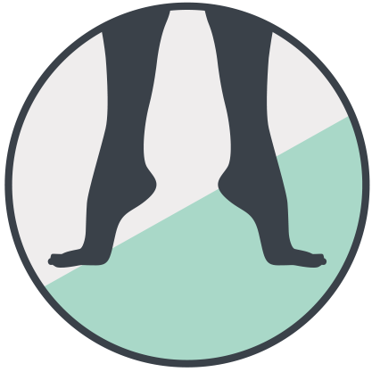
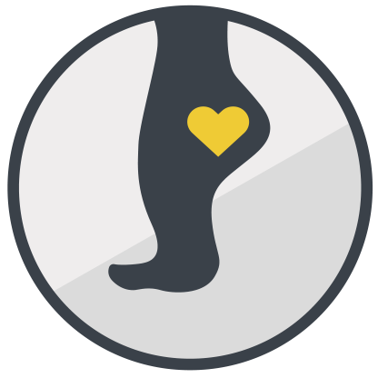

<div class="post-container">
	<div class="project">
		<h2>SECOND POSITION</h2>
		<h4>View <a href="http://stclair.design/second-position/">Live</a> or check it out on <a href="https://github.com/andreastclair/second-position">Github</a></h4>

		<p>This is my final project for UI course at The Iron Yard. While it isn't fully functional (yet), there are still a few pages to click through that will hopefully bring you as much delight as they did me. This project was a pleasure to work on because it's something that I believe strongly in. If it strikes a chord with you too and you have those back-end skills, let's chat!</p>
		
		
		
		<h4>A breakdown of the pages:</h4>
		<a href="http://stclair.design/second-position/index.html">Home</a>
		<a href="http://stclair.design/second-position/costumes.html">Browse</a>
		<a href="http://stclair.design/second-position/item2.html">Item</a>
		<a href="http://stclair.design/second-position/cart.html">Cart</a>
		<a href="http://stclair.design/second-position/account.html">Acoount</a>
		<a href="http://stclair.design/second-position/upload.html">Upload</a>
		<a href="http://stclair.design/second-position/success.html">Success</a>

		
		<h2>ABOUT THIS PROJECT</h2>
		<p>Second Position is website that raises money through costume sales to fund dance programs for children, because every child deserves to have their moment in the spotlight.</p>
		<h2>WHY THIS?</h2>
		<p>I danced ballet for 20 years, as did my sister. On average, we would get 5 new performance costumes each year. So at my parent’s house, there is a closet with 200 costumes, most of which have only been worn for 30 minutes. Total.</p>
		<p>Unfortunately, dance is an opportunity that isn't available to a lot of kids. I thought about donating all of my old costumes to a good cause, but I wanted to give more than a piece of fabric, I wanted to share the gift of dance. And so Second Position was born. A website whose sole purpose is to buy and sell (and in the future, rent) second-hand costumes, with a portion of each sale benefiting scholarships for young dancers who otherwise wouldn’t have the opportunity to dance.</p> 

		

		<p>Before designing, I conducted a lot of user research. I interviewed dancers, studio owners, dance moms, and the non-dancing crowd.</p>
		
		
		<p>The site needed to be intuitive and accessible for any user at any age, and with any level of computer knowledge. I focused heavily on making the site easy to navigate and making sure that the mission of the site is clear on every page.</p>
		
		<p>Considering that a large portion of the content is user-driven, it was important to make the pages look uniform. Specifically, the shopping pages. Every image is uploaded by the user, so I used a grid system to organize the images and make them look like they belong in the same family.</p>
		
		<p>The entire site is responsive, with a little bit of Javascript for that extra flair and functionality.</p>

		
		

	</div>	
</div>
	
	
